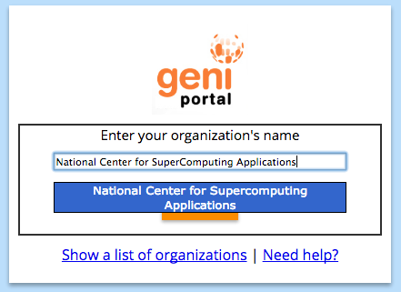
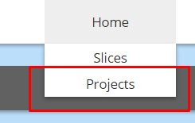

- Getting started! Part 1: Setting Up Your Account -
Creating an Account
- In order to create your GENI account, go to https://portal.geni.net/, and click on the orange button that says "Use GENI".
- There, click the link located on the bottom of the page that says "Request a login here".
- You should be directed to a page with a form asking for information. Fill it out, and submit it when you are done.
- Afterwards, the team at National Center for Supercomputing Applications (NCSA) will send you an email to notify you when your account is ready, but it may take some time.
- Note: The email will be from NCSA and sent to the email address that you provided by the form. It should arrive at your inbox within a day. If you do not receive the email, please check your spam mailbox..
Logging into GENI
- Once you have been notified that your acount is ready, you can try logging in to GENI by going to https://portal.geni.net and clicking on the orange button that says "Use GENI".
- You will be redirected to a page prompting you for your "organization's name". In that field, start typing "National Center for Supercomputing Applications", select it once it pops up, and then hit continue.

- On the new page, enter your account details, and log in.
Joining a Project
- Once logged in, hover over the "Home" button at the top of the page, and click on the "Projects" button.

- Next, click the blue button that says "Join a Project".
- On this page, enter your Instructor's name or the project name that your instructor has provided. When you find your class's project, select it, and click on the "Join" button.
- Once that is done, you will have to wait until your instructor approves the request in order for you to access the project.
Installing PuTTY
- Open a new tab in your web browser, and go to http://www.chiark.greenend.org.uk/~sgtatham/putty/download.html.
- On this webpage, click on "putty.exe" in order to download PuTTY.
- Once it is finished downloading, run the file, and follow the provided instructions in order to set up PuTTY on your computer.
Getting SSH Keys
- After you install PuTTY, go back to your browser tab for the GENI website. The top corner of the page should have your name. Hover over your name, and select "SSH Keys".

- Click the blue button that says "generate and download an SSH keypair".
- Follow the directions on the page, and enter in a passphrase. It is very important that you remember this passphrase, as you will be using it to log in to the GENI machines!
- Next, click the blue button that reads "Generate SSH private key".
- Lastly, click the button near the top of the window that reads "Download PuTTY key". Remember where you are saving this file, as you will be using it, along with the passphrase, to log in to the GENI machines!